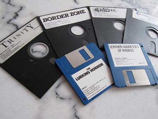

首页 > 编程笔记
dd命令_Linux dd命令：复制（拷贝）文件，并对原文件进行转换
dd，是 device driver 的缩写，它可以称得上是“Linux 世界中的搬运工”，它用来读取设备、文件中的内容，并原封不动地复制到指定位置。
当我们用 dd 命令读取 /dev/null 文件时，就可以创造出空洞文件，而如果你的磁盘足够大，你甚至可以创造出一个宇宙黑洞呢！
写到这里，突然意识到我的硬盘里面存有很多珍贵的资料，一想到可能会因为磁盘故障而永远失去它们，心里就不禁一颤，赶紧把数据备份提上日程吧！
之前看过一些介绍 dd 的文章，例子中基本都是使用 hda、hdb 这种 IDE 接口的硬盘，其实现在的主流硬盘已经是 SATA 接口的了，下面我要备份的硬盘是 dev/sda，它就是块 SATA 盘。
这个命令将 sda 盘备份到指定文件 /root/sda.img 中去，其中用到了如下两个选项：
通过上面的 dd 命令，我们得到了 sda.img 文件，它就是已经备份好了的磁盘映像文件，里面存储着 /dev/sda 整块硬盘的内容。
在未来的某天，假如 /dev/sda 硬盘真的出现了故障，我们就可以将曾经备份的 sda.img 复制到另一台电脑上，并将其恢复到指定的 sdb 盘中去。
如果能把目标硬盘直接连接到我们现在的电脑上，并让系统识别到这块新硬盘，例如识别成 /dev/sdc，那么我们可以直接使用 dd 命令将 sda 盘复制到 sdc 中去。这种用法既可以用来整盘备份，也可以用来快速复制系统环境。下面来看看具体的命令：
对 dd 来说，所有设备和文件都一视同仁，所谓的“备份”和“恢复”，dd 都认为是一种内容的复制。dd 操作就是简单的按字节复制。简单、直观，就是我对 dd 的最直接的感受。
假如遇到磁盘空间不足，连备份操作都没办法圆满完成：
其实我们在使用 dd 做备份时，可以使用 gzip 或者 bzip2 压缩算法进行数据压缩处理，这样可以大大减少我们的磁盘空间用量，也就降低了备份成本。
下面就使用 gzip 压缩算法配合 dd 命令来备份 /dev/sda 盘：
然后再将其恢复到 /dev/sdb 盘中去，方法如下：
下面我们更换 bzip2 压缩算法配合 dd 命令再来实现一遍上面示例的效果：
卖了一个关子，其实在 dd 命令看来，备份整盘和备份分区，在命令形式上并没有区别，我们来看示例：
同理，将内存中的数据整体备份，照样可以如法炮制：
随着科技的飞速发展，无论是台式机还是笔记本，都已经取消了软驱和光驱设备，软盘和光盘也已经接近灭绝的边缘，很多九零后们应该都不知道软驱为何物了吧。
所以接下来要介绍的软盘、光盘备份法，权当是追忆过去吧，谨以此内容来怀念我们逝去的青春。
对于 dd 命令来说，除了 if、of 两个选项之外，还应该掌握下面这两个重要选项：
所以这里备份的软盘大小是 1440kB，可以看出这是一块 3 寸盘，其大小为 1.44MB。为了追忆青春，我们再来一起看看软盘的样子。
一块磁盘的第一个扇区的 512 个字节所存储的正是这块磁盘的 MBR 信息，我们尝试用 dd 命令备份 MBR：
如果未来遇到分区表损坏的情况，我们用曾经备份的 MBR 信息写回磁盘，就能起到立竿见影的效果。下面来一起看看如何将 MBR 写回硬盘：
方法是不是比你想象得要简单，即使是面对 MBR 如此重要的敏感数据，dd 命令也是闲庭信步，信手拈来。
我们可以观察下面两个命令的执行时间，来计算出硬盘的读、写性能：
上面命令生成了一个 1GB 的文件 1Gb.file，下面我们配合 time 命令，可以看出不同的块大小数据的写入时间，从而可以测算出到底块大小为多少时可以实现最佳的写入性能。
如果我们想清除硬盘里的某些机密数据，就可以使用 /dev/urandom 这个随机数生成器来产生随机数据，写到磁盘上，以确保将磁盘原始数据完全覆盖掉。
好了，有关 dd 的故事就介绍到这里了。虽然我们不能创造出真正的宇宙黑洞，但学习了这么多的实用技能，也算不虚此行啦！
当我们用 dd 命令读取 /dev/null 文件时，就可以创造出空洞文件，而如果你的磁盘足够大，你甚至可以创造出一个宇宙黑洞呢！
备份磁盘并恢复
好记性不如烂笔头，好硬盘不如常备份。硬盘的损坏虽然是个小概率事件，但是一旦发生却会带来灾难性的后果。对重要数据进行备份，不仅是一个好习惯，更体现了对别人对自己负责的态度。写到这里，突然意识到我的硬盘里面存有很多珍贵的资料，一想到可能会因为磁盘故障而永远失去它们，心里就不禁一颤，赶紧把数据备份提上日程吧！
之前看过一些介绍 dd 的文章，例子中基本都是使用 hda、hdb 这种 IDE 接口的硬盘，其实现在的主流硬盘已经是 SATA 接口的了，下面我要备份的硬盘是 dev/sda，它就是块 SATA 盘。
[root@roclinux ~]# dd if=/dev/sda of=/root/sda.img
这个命令将 sda 盘备份到指定文件 /root/sda.img 中去，其中用到了如下两个选项：
- if=文件名：指定输入文件名或者设备名，如果省略“if=文件名”，则表示从标准输入读取。
- of=文件名：指定输出文件名或者设备名，如果省略“of=文件名”，则表示写到标准输出。
通过上面的 dd 命令，我们得到了 sda.img 文件，它就是已经备份好了的磁盘映像文件，里面存储着 /dev/sda 整块硬盘的内容。
在未来的某天，假如 /dev/sda 硬盘真的出现了故障，我们就可以将曾经备份的 sda.img 复制到另一台电脑上，并将其恢复到指定的 sdb 盘中去。
[root@roclinux ~]# dd if=/root/sda.img of=/dev/sdb
如果能把目标硬盘直接连接到我们现在的电脑上，并让系统识别到这块新硬盘，例如识别成 /dev/sdc，那么我们可以直接使用 dd 命令将 sda 盘复制到 sdc 中去。这种用法既可以用来整盘备份，也可以用来快速复制系统环境。下面来看看具体的命令：
[root@roclinux ~]# dd if=/dev/sda of=/dev/sdc
对 dd 来说，所有设备和文件都一视同仁，所谓的“备份”和“恢复”，dd 都认为是一种内容的复制。dd 操作就是简单的按字节复制。简单、直观，就是我对 dd 的最直接的感受。
备份时进行压缩
数据没有压缩就进行整盘备份，势必需要很大的备份空间，从而导致备份成本升高。这对于备份场景来说，是低效能的表现。假如遇到磁盘空间不足，连备份操作都没办法圆满完成：
#看, 报出了磁盘空间不足的警告 [root@roclinux ~]# dd if=/dev/sda of=/root/sda.img dd: writing to '/root/sda.img': No space left on device
其实我们在使用 dd 做备份时，可以使用 gzip 或者 bzip2 压缩算法进行数据压缩处理，这样可以大大减少我们的磁盘空间用量，也就降低了备份成本。
下面就使用 gzip 压缩算法配合 dd 命令来备份 /dev/sda 盘：
#没有指定of则表示输出到标准输出 [root@roclinux ~]# dd if=/dev/sda | gzip > /root/sda.img.gz
然后再将其恢复到 /dev/sdb 盘中去，方法如下：
#没有指定if就表示从标准输入读取
下面我们更换 bzip2 压缩算法配合 dd 命令再来实现一遍上面示例的效果：
[root@roclinux ~]# dd if=/dev/sda | bzip2 > disk.img.bz2 [root@roclinux ~]# bzip2 -dc /root/sda.img.gz | dd of=/dev/sdc
分区、内存、软盘一个都不能少
在上面的内容中，介绍的都是备份整盘的知识，那如果只是想备份某一个分区的数据，应该如何操作呢？卖了一个关子，其实在 dd 命令看来，备份整盘和备份分区，在命令形式上并没有区别，我们来看示例：
[root@roclinux ~]# dd if=/dev/sda2 of=/root/sda_part1.img
同理，将内存中的数据整体备份，照样可以如法炮制：
[root@roclinux ~]# dd if=/dev/mem of=/root/mem.img
随着科技的飞速发展，无论是台式机还是笔记本，都已经取消了软驱和光驱设备，软盘和光盘也已经接近灭绝的边缘，很多九零后们应该都不知道软驱为何物了吧。
所以接下来要介绍的软盘、光盘备份法，权当是追忆过去吧，谨以此内容来怀念我们逝去的青春。
#备份软盘 [root@roclinux ~]# dd if=/dev/fd0 of=/root/fd0.img count=1 bs=1440k #备份光盘 [root@roclinux ~]# dd if=/dev/cdrom of=/root/cd.img
对于 dd 命令来说，除了 if、of 两个选项之外，还应该掌握下面这两个重要选项：
- bs=N：设置单次读入或单次输出的数据块（block）的大小为 N 个字节。当然也可以使用 ibs 和 obs 选项来分别设置。
- ibs=N：单次读入的数据块（block）的大小为 N 个字节，默认为 512 字节。
- obs=N：单次输出的数据块（block）的大小为 N 个字节，默认为 512 字节。
- count=N：表示总共要复制 N 个数据块（block）。
所以这里备份的软盘大小是 1440kB，可以看出这是一块 3 寸盘，其大小为 1.44MB。为了追忆青春，我们再来一起看看软盘的样子。

备份磁盘的 MBR
MBR，是 Master Boot Record，即硬盘的主引导记录，MBR 一旦损坏，分区表也就被破坏，数据大量丢失，系统就再也无法正常引导了，真是不堪设想啊！所以，对 MBR 的定期备份是十分必要的，在紧急关头，把它比喻成一颗救死扶伤的速效救心丸，也绝不为过。一块磁盘的第一个扇区的 512 个字节所存储的正是这块磁盘的 MBR 信息，我们尝试用 dd 命令备份 MBR：
[root@roclinux ~]# dd if=/dev/sda of=/root/sda_mbr.img count=1 bs=512
如果未来遇到分区表损坏的情况，我们用曾经备份的 MBR 信息写回磁盘，就能起到立竿见影的效果。下面来一起看看如何将 MBR 写回硬盘：
[root@roclinux ~]# dd if=/root/sda_mbr.img of=/dev/sda
方法是不是比你想象得要简单，即使是面对 MBR 如此重要的敏感数据，dd 命令也是闲庭信步，信手拈来。
使用 /dev/zero 和 /dev/null 来测试磁盘
本段落开始前，我们要为大家介绍两位新朋友：- /dev/null，也叫空设备，小名“无底洞”。任何写入它的数据都会被无情抛弃。
- /dev/zero，可以产生连续不断的 null 的流（二进制的零流），用于向设备或文件写入 null 数据，一般用它来对设备或文件进行初始化。
我们可以观察下面两个命令的执行时间，来计算出硬盘的读、写性能：
#向磁盘上写一个大文件, 来看写性能 [root@roclinux ~]# dd if=/dev/zero bs=1024 count=1000000 of=/root/1Gb.file #从磁盘上读取一个大文件, 来看读性能 [root@roclinux ~]# dd if=/root/1Gb.file bs=64k | dd of=/dev/null
上面命令生成了一个 1GB 的文件 1Gb.file，下面我们配合 time 命令，可以看出不同的块大小数据的写入时间，从而可以测算出到底块大小为多少时可以实现最佳的写入性能。
[root@roclinux ~]# time dd if=/dev/zero bs=1024 count=1000000 of=/root/1Gb.file [root@roclinux ~]# time dd if=/dev/zero bs=2048 count=500000 of=/root/1Gb.file [root@roclinux ~]# time dd if=/dev/zero bs=4096 count=250000 of=/root/1Gb.file [root@roclinux ~]# time dd if=/dev/zero bs=8192 count=125000 of=/root/1Gb.file
利用 /dev/urandom 进行格式化
除了 /dev/null 和 /dev/zero 之外，还有一个很重要的文件，即 /dev/urandom，它是“随机数设备”，它的本领就是可以生成理论意义上的随机数。如果我们想清除硬盘里的某些机密数据，就可以使用 /dev/urandom 这个随机数生成器来产生随机数据，写到磁盘上，以确保将磁盘原始数据完全覆盖掉。
[root@roclinux ~]# dd if=/dev/urandom of=/dev/sda
好了，有关 dd 的故事就介绍到这里了。虽然我们不能创造出真正的宇宙黑洞，但学习了这么多的实用技能，也算不虚此行啦！
关注公众号「站长严长生」，在手机上阅读所有教程，随时随地都能学习。内含一款搜索神器，免费下载全网书籍和视频。

微信扫码关注公众号